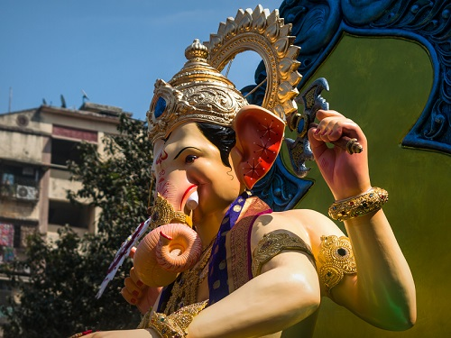

Khairatabad Ganesh is an idol of the Hindu god Ganesha (known as "Ganesh" in Hindi) that is installed during the annual festival of Ganesh Chaturthi at Khairatabad locality of Hyderabad, India. Constructed annually and known for its height and the laddu held in the figure's hand, the idol is worshipped during the 10-day festival where thousands of devotees visit every day. On the 11th day, the idol is immersed in the nearby Hussain Sagar lake. Inspired by Bal Gangadhar Tilak, Singari Shankaraiah first established a 1 foot (0.30 m) Ganesh idol in 1954 at a temple in Khairatabad. The height of the constructed idol increased by one foot every year until 2014, where it reached 60 feet (18 m). The size was later reduced owing to the limitations of the route to Hussain Sagar lake and environmental concerns. The idol's peak height was 61 feet (19 m)[a] in 2019, thereby becoming the tallest idol of Ganesh in India that year.